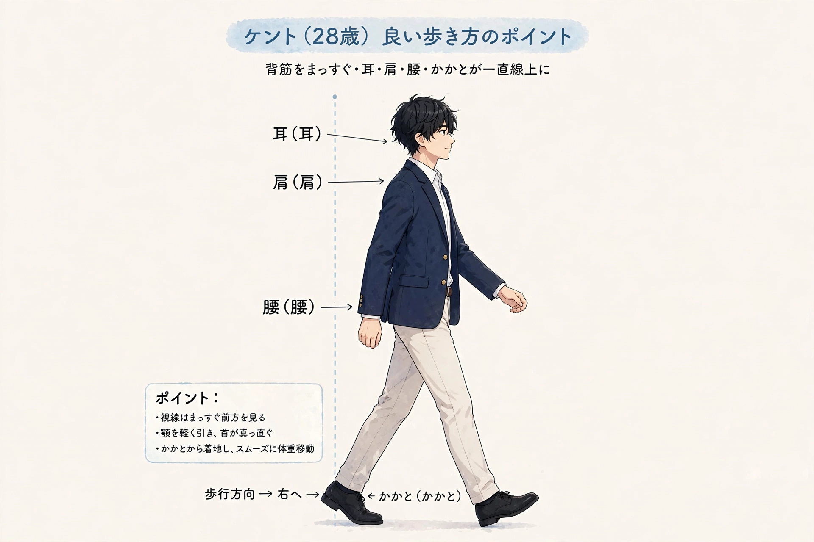
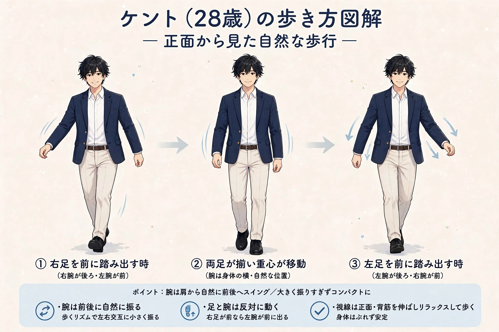

カッコよく見える歩き方｜スーツ姿の歩き方（メンズ）
ケント：歩き方がだらしないと、良いスーツでも印象が落ちます。姿勢と腕の振りの基本をまとめました。
基本1：一直線の姿勢で歩く
耳・肩・腰・かかとが一直線に近づく立ち姿が土台です（図1）。下を向いて歩くと猫背が強調されます。目線は前に保ってください。

基本2：腕は前後に小さく
腕は体の横で前後に小さく振ります（図2）。ポケットに両手を入れたまま歩くと、肩が前に出て猫背に見えます。片手だけなら、もう片方を振ってください。

靴との関係
かかとのすり減りは歩き方のクセを映します。靴の手入れと買い替えは清潔感は足元から｜靴の選び方と手入れ、2足 rotation は革靴は2足で回すにまとめています。
この記事のテーマに合う商品
PR：仕事で使える革靴（PR）


あわせて読みたい：写真でカッコよく見えるポージング／トレーニング一覧